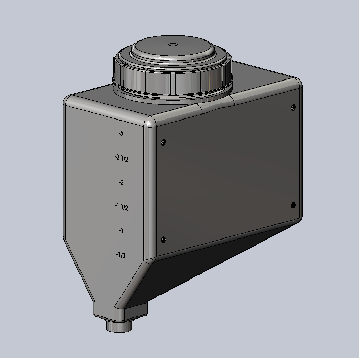
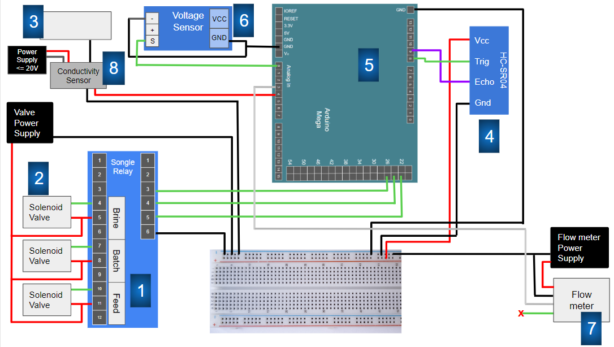

Tow Lab
Contributions:
- Student researcher
- Water tank volume calculations
- Circuit diagrams
Water Tank Volume Calculations
Goal:
Create an equation for the volume of water in the tank based on the measured height of the water.

Process:
1. Split the tank geometry into multiple, simpler parts
- Top rectangular prism
- Middle pyramid-esque shape
- Bottom rectangular prism
2. Solve each subsection's volume individually as a function of height
3. Combine subsections, and calibrate each height to the overall tank height
4. Put equations into a MATLAB function for easy processing
Wiring Diagrams
Goal:
Create a circuit diagram for wiring a small batch-RO system. The system consists mainly of timer-based valve controls and various sensors.
